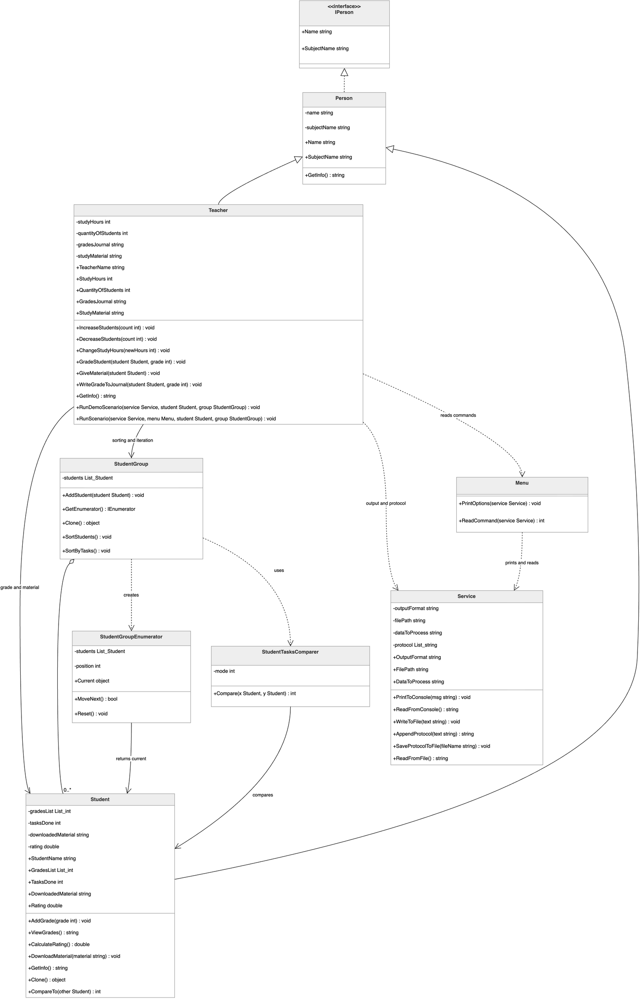
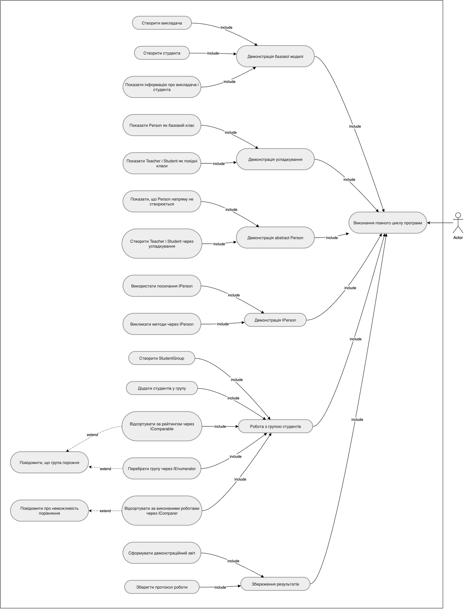
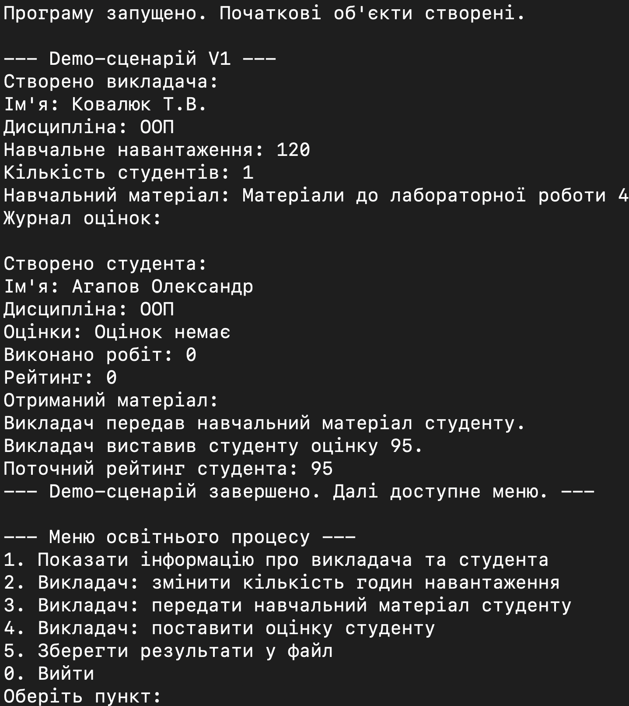
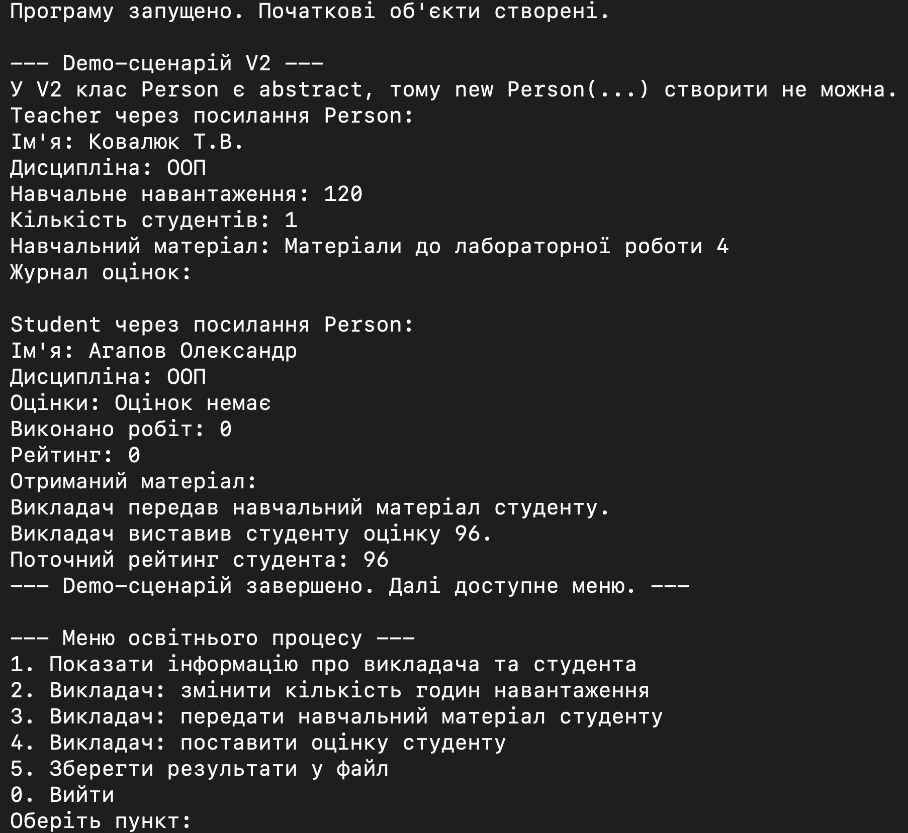
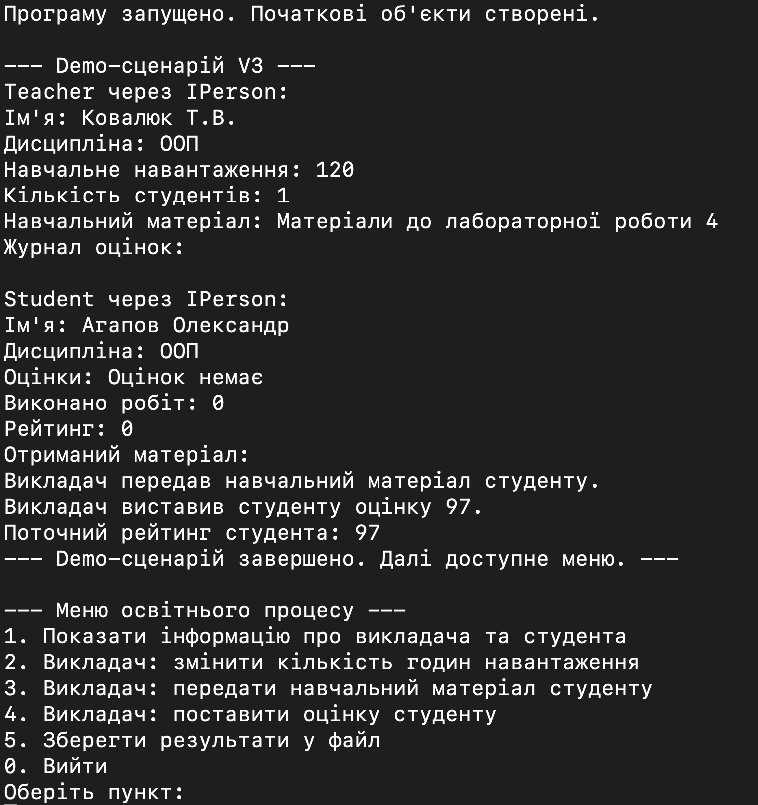
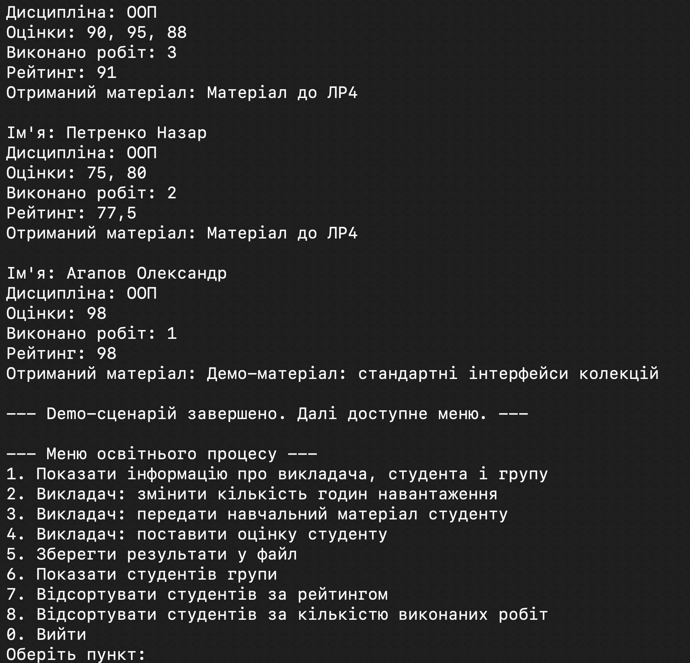

1. Мета роботи
Лабораторна робота №4 розвиває виправлену ЛР3 і демонструє спадкування, абстракцію, власні інтерфейси та стандартні інтерфейси .NET для порівняння, сортування і перебору.
2. Умова задачі
Фінальна версія LAB_4_V4 моделює освітній процес з викладачем, студентом і групою студентів. У ній збережено розвиток версій V1-V4: успадкування, abstract Person, IPerson, IComparable, IComparer, IEnumerable, IEnumerator.
3. Аналіз задачі / OOA
Person— базова узагальнена сутність.Teacher— викладач, який веде предметний сценарій.Student— студент з оцінками, роботами і рейтингом.StudentGroup— група студентів для колекційної логіки.IPerson,StudentTasksComparer,StudentGroupEnumerator— допоміжні елементи моделі.Program,Menu,Service— технічні класи.
4. Об'єктно-орієнтоване проєктування / OOD
V1—Person -> Teacher / Student.V2—abstract Person.V3—IPerson -> Person -> Teacher / Student.V4—StudentGroup,IComparable,IComparer,IEnumerable,IEnumerator.


5. Структура програми
Program.cs— створюєService,Teacher,Student,StudentGroup,Menuі запускає сценарій черезTeacher.Menu.cs— містить тількиPrintOptions(Service service)іReadCommand(Service service).Service.cs— працює тільки з консоллю, текстом, протоколом і файлами.Teacher.cs— предметна логіка викладача і demo-сценарій.Student.cs— логіка студента таIComparable<Student>.StudentGroup.cs— група студентів таIEnumerable.StudentTasksComparer.cs—IComparer<Student>.StudentGroupEnumerator.cs—IEnumerator.
6. Архітектурні зміни після перевірки реалізації
Після перевірки реалізації було уточнено розподіл відповідальностей між класами і приведено структуру програми до єдиного архітектурного принципу.
Programзалишено тільки як точку запуску: він створює об'єкти і запускає сценарій.- Demo-сценарій знаходиться в
Teacher, бо викладач є активною предметною сутністю освітнього процесу. Menuне маєTeacher,Student,StudentGroupяк полів і більше не керує предметною областю.Menuвиконує тількиPrintOptions(Service service)таReadCommand(Service service).Serviceне керує предметними об'єктами і працює тільки з консоллю, текстом, протоколом і файлами.- Предметні класи самі формують свою логіку і текстові результати, а
Serviceтільки виводить або зберігає готовий текст. - Окремий
DemoScenarioне створювався.
7. Результати виконання програми
7.1. Результат виконання LAB_4_V1
Перша версія показує сам факт переходу від окремих класів до ієрархії з базовим класом Person. На скріншоті видно, що спільні властивості винесено в базову сутність, а Teacher і Student залишаються носіями своєї предметної поведінки.

7.2. Результат виконання LAB_4_V2
У другій версії перевіряється ідея абстрактної базової сутності: Person більше не розглядається як самостійний об'єкт предметної області. Це підкреслює, що реальні учасники освітнього процесу — саме викладач і студент.

7.3. Результат виконання LAB_4_V3
Третя версія демонструє інтерфейсний рівень над базовим класом і показує поліморфізм через IPerson. Це підтверджує, що спільний контракт можна використати без втрати конкретної поведінки Teacher і Student.

7.4. Результат виконання LAB_4_V4
Фінальна версія додає групу студентів і перевіряє вже не лише спадкування, а й стандартні інтерфейси .NET для сортування та перебору. На цьому етапі добре видно, що StudentGroup стала окремою колекційною сутністю, а не технічним додатком до меню.

8. Перевірка працездатності
LAB_4_V1— Build succeeded, 0 Warning(s), 0 Error(s)LAB_4_V2— Build succeeded, 0 Warning(s), 0 Error(s)LAB_4_V3— Build succeeded, 0 Warning(s), 0 Error(s)LAB_4_V4— Build succeeded, 0 Warning(s), 0 Error(s)
Фінальна версія також була запущена: LAB_4_V4.
9. Висновок
У лабораторній роботі №4 реалізовано розвиток предметної моделі від простого успадкування до використання інтерфейсів і стандартних колекційних механізмів C#. Архітектурне уточнення зробило ролі класів зрозумілішими: доменні сутності відповідають за змістову поведінку, а технічні класи тільки обслуговують запуск, консоль і файл.
Demo-сценарій у Teacher дає змогу швидко побачити, як у різних версіях перевіряються спадкування, абстракція, поліморфізм і робота з групою студентів через стандартні інтерфейси.
Документація коду Doxygen. Для фінальної версії LAB_4_V4 згенеровано HTML-документацію Doxygen. Вона містить перелік класів, файлів, методів, властивостей і XML-коментарів до коду.